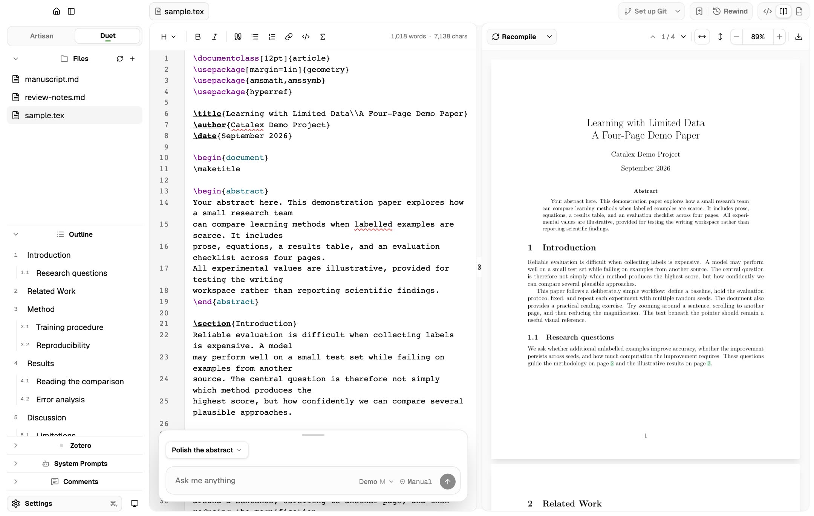

A clean space to write.
A minimal workspace for LaTeX and Markdown. Artisan mode for focused writing. Duet mode for agent collaboration.

Draft, polish, and format with agent assistance, using the subscription you already have.

A minimal workspace for LaTeX and Markdown. Artisan mode for focused writing. Duet mode for agent collaboration.
Commit, stash, and merge visually. Auto-detect your Git setup and sync with Overleaf, GitHub, or any Git remote.

Your agent can work with the whole project, your selections, and compilation errors.

Your agent works in a separate draft. When it’s ready, you accept or reject each change before it reaches your project.

Yellow for you, violet for agents, with matching PDF highlights. Built-in MCP tools and skills let agents leave review notes and resolve anyone’s comments.
* Local-only, for personal notes and agent review. Not synced to Overleaf or GitHub.

Every open project gets a private local Git history in Catalex’s storage, separate from your repository. Rewind to an earlier version—whether it was your edit or your agent’s.

Work with Codex, Claude Code, or Pi, using your existing subscription.
Designed mainly for computer science researchers and students writing LaTeX papers and Markdown rebuttals.
Catalex is a writing helper, not an autonomous researcher. You lead the research; your agent helps turn results into tables, draft paragraphs, or polish wording within your workflow. You remain responsible for the paper.
As submission approaches, your agent can help reduce page count, tighten paragraphs with short final lines, adjust figure placement, and check for missing sections required by your venue. It can compile LaTeX and inspect the PDF to check the result.
Catalex stores its history and agent drafts separately in private app storage. Your project stays free of extra hidden app files and indexes.
Catalex fits into your team’s existing workflow. Write locally with your agent, then use Git to sync with coauthors on Overleaf or GitHub.